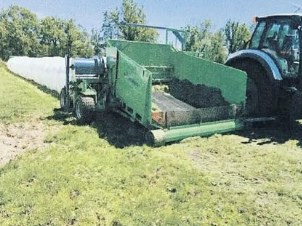
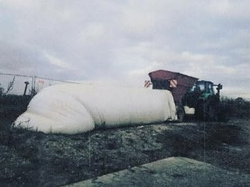
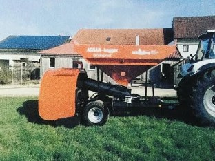
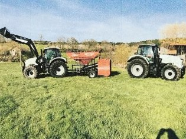

Fenster
Gute Fenster, sauber eingebaut. Sie bekommen eine ehrliche Empfehlung, was bei Ihnen sinnvoll ist.
- Beratung und Aufmaß
- Verkauf und Lieferung
- Einbau durch uns selbst
Der gelernte Schreiner, der Sie berät, steht später auch selbst auf Ihrer Baustelle und baut ein.
Wir suchen mit Ihnen die Lösung, die zu Ihrem Haus passt, messen aus, liefern und montieren.
Gute Fenster, sauber eingebaut. Sie bekommen eine ehrliche Empfehlung, was bei Ihnen sinnvoll ist.
Vom Verkauf bis zur fertig eingehängten Tür. Sie haben einen Ansprechpartner für alles.
Wir bauen Tore von Teckentrup und Hörmann ein, passend zu Ihrer Garage oder Halle.
Lugge ist gelernter Schreiner. Er verkauft Fenster, Türen und Tore und baut sie auf den Baustellen selbst ein. Deshalb empfiehlt er, was sich beim Einbau und im Alltag bewährt hat.
Lagern im Folienschlauch: schnell befüllt, luft- und wasserdicht verschlossen und überall dort abgelegt, wo Platz ist.
Das Erntegut wird ohne Pause in den Schlauch gepresst und sofort dicht verschlossen. Sie kippen direkt vom Feld ab, ein Zwischenlager braucht es nicht.


Trockene oder feuchte Güter lagern im Schlauch ohne Begasung und Belüftung, geschützt vor Schädlingen und Feuchtigkeit.


Für Futter- und Lebensmittel, zum Beispiel zum Umlagern oder Verladen.
Wir schroten Getreide und Mais.
Ihr Ansprechpartner für Siloschlauchpressen: Chris
Am schnellsten geht es per WhatsApp: kurz schildern, worum es geht, gern mit Foto.